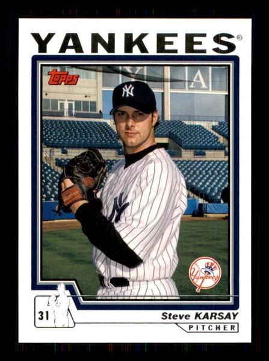
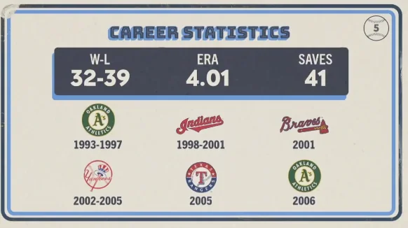

Steve Karsay
Career Highlights & Facts
(Facts are AI-generated and may require verification)
- Was a key piece in a trade that brought a legendary Hall of Fame base-stealer to the West Coast.
- Transitioned to the Bronx after spending time with a club that also employed a volatile, high-profile relief pitcher who was later traded to the pinstripes.
- Served as a reliable arm in the New York bullpen during the early part of the new millennium.
Would you like to find out more about Steve Karsay?
Career Totals
| WAR | W | L | ERA | G | GS | SV | IP | SO | WHIP |
|---|---|---|---|---|---|---|---|---|---|
| 11.2 | 32 | 39 | 4.01 | 357 | 40 | 41 | 603.1 | 458 | 1.384 |
Statistics via Baseball-Reference.com
The Original Clue
